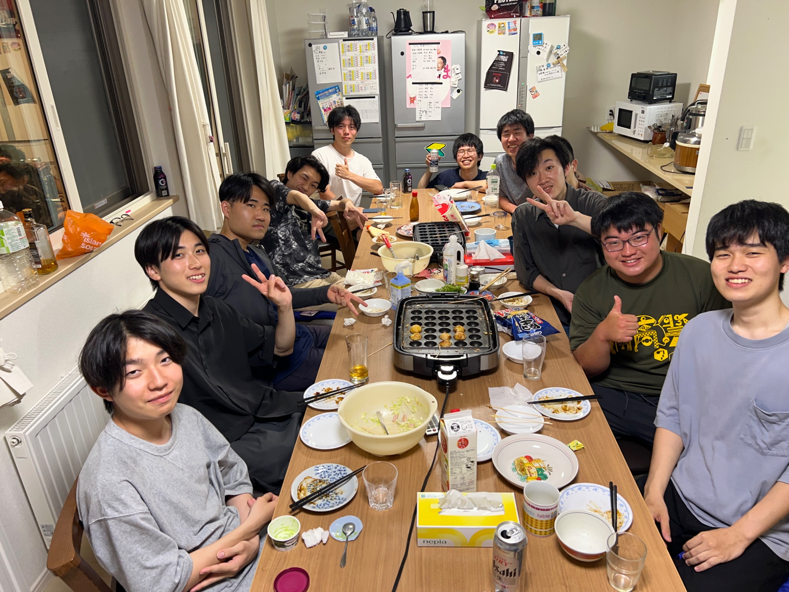
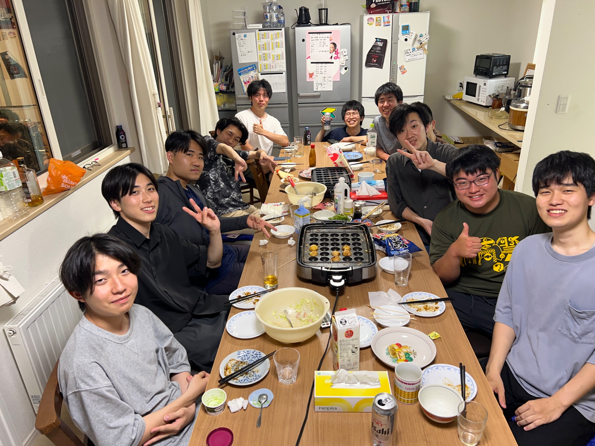

福島学寮
〜変な寮〜
スクロール
あなたはこの家の異常さが分かるだろうか。おそらく、一見しただけでは、ごくありふれた民家に見えるだろう。しかし、注意深くすみずみまで見ると、家中そこかしこに、奇妙な違和感が存在していることに気づく。その違和感が重なり、やがて一つの「事実」に結びつく。
それはあまりに恐ろしく、決して信じたくない事実である。
突貫工事
実際は
築浅で綺麗で過ごしやすい男子寮です！
寮生間の仲も良く、寮食も美味しい！
居心地も最高です！

Scroll
居心地も最高です！ 
Scroll
立地・アクセス
- 教養棟まで自転車15分
- コンビニまで徒歩5分
- 新川駅まで徒歩13分
- 裏にエルムの森公園あり
建物・設備
- 建物が新しい！
- 全部屋 Wi-Fi完備
- 共用の生活家電あり
- 新生活用品ほぼ不要！
寮母・寮食
- 優しい寮母さんが平日常駐
- 大人に相談できる環境
- 平日朝晩、寮食付き
- 栄養バランスの良い食事
寮費の安さ
- 公益費・食費込みで安価
- 月々約45,000円
(2024年度平均実績)
コミュニティ
- 寮生同士の距離が近い
- 先輩・後輩のつながり
- 情報交換・助け合いが盛ん
共同生活の楽しさ
- キッチン・リビングを共有
- 自然に交流が生まれる
- イベントも盛り沢山

自由度の高さ
- 門限なし・厳格な規則無し
- プライバシーも確保
- 自分らしい生活スタイル
歴史と伝統
- 1932年に初代学寮建設
- 前身は「会津学寮」
- 福島県との深いつながり